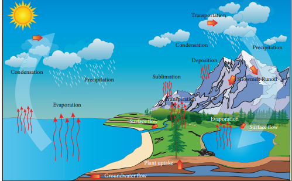
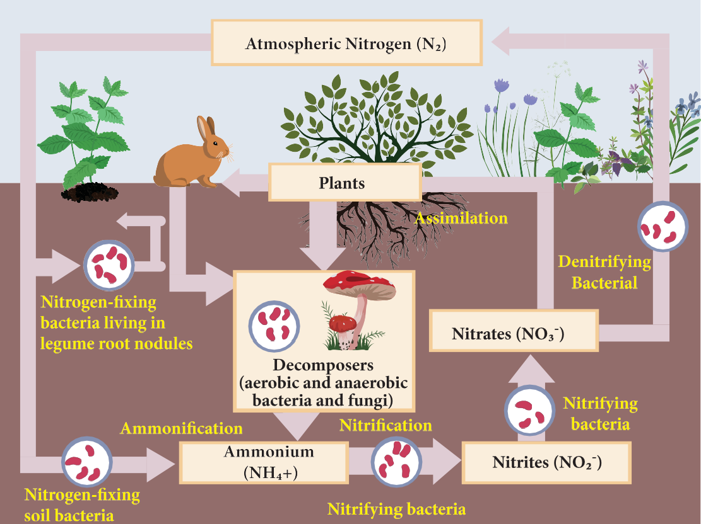
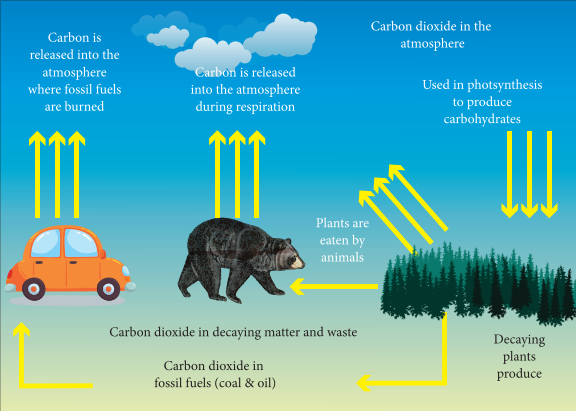
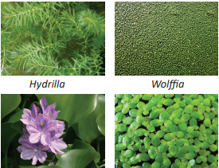
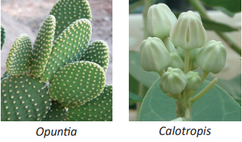
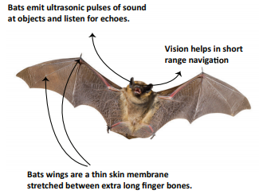
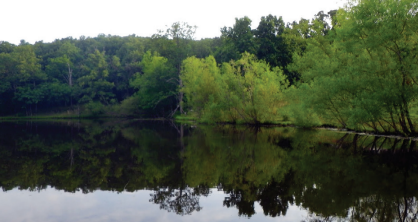
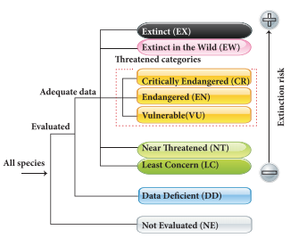
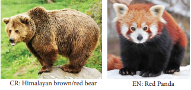

After completing this lesson, students will be able to
relate different aspects of environmental science.
describe biogeochemical cycles.
analyse the impacts of human activities on water cycle, nitrogen cycle and carbon cycle.
correlate the adaptations of plants with the habitat.
explain the adaptations of bat and earthworm.
explain recycling of water its methods and importance .
discuss the importance of water conservation and water recycling methods.
“Nature has the power to refresh and renew” Helen Keller
Elements of nature continuously undergo changes and transformations. Environmental protection provides holistic knowledge about natural processes, effects of human intervention and solutions to overcome environmental problems. Environmental issues such as pollution, global warming, ozone layer depletion, acid rain, deforestation, landslide, drought and desertification have gained major focus across the world. Natural resources are recycled over and over again on earth for continued availabilty. At the same time, it also reminds us of our responsibility to reduce and restrain our activities that will affect the natural processes.
Living organisms adjust themselves according to their habitat and changes in the ecosystem. All living organisms develop certain morphological, anatomical, physiological and reproductive adaptations which help them to survive better and to withstand environmental conditions.
This lesson deals with bio-geo-chemical cycles, adaptations by the plants and animals, water conservation and recycling of water.
Biosphere is the part of the earth where life exists. All resources of biosphere can be grouped into two major categories namely:
Bracket OPEN 1 bracket closed Biotic or living factors which include plants, animals and all other living organisms.
Bracket OPEN 2 bracket closed Abiotic or non-living factors which include all factors like temperature, pressure, water, soil, air and sunlight which affect the ability of organisms to survive and reproduce.
There is a constant interaction between biotic and abiotic components in the biosphere and that makes the biosphere a dynamic and stable system. Cyclic flow of nutrients between non-living and living factors of the environment are termed as bio-geo-chemical cycles. Some of the important biogeochemical cycles are:
1. Water cycle 2. Nitrogen cycle 3. Carbon cycle
Water cycle or hydrological cycle is the continuous movement of water on earth. In this process, water moves from one reservoir to another by processes such as evaporation, sublimation, transpiration, condensation, precipitation, surface runoff and infiltration, during which water converts itself to various forms like liquid, solid and vapour Bracket OPEN Figure 24.1bracket closed.
Evaporation: Evaporation is a type of vaporization, where liquid is converted to gas before reaching its boiling point. Water evaporates from the surface of the earth and water bodies such as the oceans, seas, lakes, ponds and rivers.
Sublimation: Sublimation is conversion of solid to gas, without passing through the intermediate liquid phase. Ice sheets and ice caps from north and south poles, and icecaps on mountains, get converted into water vapour directly, without converting into liquid.
Transpiration: Transpiration is the process by which plants release water vapour into the atmosphere through sto ma ta in leaves and stems.
Condensation: Condensation is the changing of gas phase into liquid phase and is the reverse of vaporisation. At higher altitudes, the temperature is low. The water vapour present there condenses to form very tiny particles of water droplets. These particles come close together to form clouds and fog.
Precipitation: Due to change in wind or temperature, clouds combine to make bigger droplets, and pour down as precipitation Bracket OPEN rain bracket closed. Precipitation includes drizzle, rain, snow and hail.
Run off As the water pours down, it runs over the surface of earth. Runoff water combines to form channels, rivers, lakes and ends up into seas and oceans.
Infiltration: Some of the precipitated water moves deep into the soil. Then it moves down and increases the ground water level.
Percolation: Some of the precipitated water flows through soil and porous or fractured rock.
Infiltration and percolation are two related but different processes describing the movement of water through soil.
Major human activities affecting the water cycle on land are urbanisation, dumping of plastic waste on land and into water, polluting water bodies and deforestation.
Figure 24.1 Water cycle Image was given below

Box item open
Take a small container and place it in the middle of the large bowl. Fill water in the large container and cover it with plastic wrap. Fasten the plastic wrap around the rim of the large container with the rubber band. Place a stone on the top of the plastic wrap. Keep this under sun for few hours. Record your observation . box item ends
Nitrogen is the important nutrient needed for the survival of all living organisms. It is an essential component of proteins, DNA and chlorophyll. Atmosphere is a rich source of nitrogen and contains about 78 percent nitrogen. Plants and animals cannot utilize atmospheric nitrogen. They can use it only if it is in the form of ammonia, amino acids or nitrates
Processes involved in nitrogen cycle are explained below
Figure 24.2 Nitrogen cycle image was given below

Nitrogen fixation: Nitrogen fixation is the conversion of atmospheric nitrogen, which is in inert form, to reactive compounds available to living organisms. This conversion is done by a number of bacteria and blue green algae Bracket OPEN Cyanobacteria bracket closed. Leguminous plants like pea and beans have a symbiotic relationship with nitrogen fixing bacteria Rhizobium. Rhizobium occur in the root nodules of leguminous plants and fixes nitrogenous compounds.
Nitrogen assimilation: Plants absorb nitrate ions and use them for making organic matter like proteins and nucleic acids. Herbivorous animals convert plant proteins into animal proteins. Carnivorous animals synthesize proteins from their food.
Ammonification: The process of decomposition of nitrogenous waste by putrefying bacteria and fungi into ammonium compounds is called ammonification. Animal proteins are excreted in the form of urea, uric acid or ammonia. The putrefying bacteria and fungi decompose these animal proteins, dead animals and plants into ammonium compounds.
Nitrification: The ammonium compounds formed by ammonification process are oxidised to soluble nitrates. This process of nitrate formation is known as nitrification. The bacteria responsible for nitrification are called as nitrifying bacteria.
Table 24.1 Microorganisms involved in nitrogen cycle was given below
Role played in nitrogen cycle |
Name of the microorganisms |
Nitrogen fixation |
Azotobacter Bracket OPEN in soil bracket closed Rhizobium Bracket OPEN in root nodules bracket closed Blue green algae- Nostoc |
Ammonification |
Putrefying bacteria, Fungi |
Nitrification |
Nitrifying bacteria |
Denitrification |
Denitrifying bacteria Pseudomonas |
Denitrification: Free living soil bacteria such as Pseudomonas sp. reduce nitrate ions of soil into gaseous nitrogen which enters the atmosphere.
Burning fossil fuels, application of nitrogen based fertilizers and other activities can increase the amount of biologically available nitrogen in an ecosystem. Nitrogen applied to agricultural fields enters rivers and marine systems. It alters the biodiversity, changes the food web structure and destroys the general habitat.
Carbon occurs in various forms on earth. Charcoal, diamond and graphite are elemental forms of carbon. Combined forms of carbon include carbon monoxide, carbon dioxide and carbonate salts. All living organisms are made up of carbon containing molecules like proteins and nucleic acids. The atmospheric carbon dioxide enters into the plants through the process of photosynthesis to form carbohydrates. From plants, it is passed on to herbivores and carnivores. During respiration, plants and animals release carbon into atmosphere in the form of carbon dioxide. Carbon dioxide is also returned to the atmosphere through decomposition of dead organic matter, burning fossil fuels and volcanic activities.
Figure 24.3 Carbon cycle image was given below

More carbon moves into the atmosphere due to burning of fossil fuels and deforestation. Most of the carbon in atmosphere is in the form of carbon dioxide. Carbon dioxide is a greenhouse gas. By increasing the amount of carbon dioxide, earth becomes warmer. This leads to greenhouse effect and global warming.
Any feature of an organism or its part that enables it to exist under conditions of its habitat is called adaptation. On the basis of water availability, plants have been classified as:
Bracket OPEN 1 bracket closed Hydrophytes
Bracket OPEN 2 bracket closed Xerophytes
Bracket OPEN 3 bracket closed Meesophytes
Plants growing in or near water are called hydrophytes. Hydrophytes may be free floating or submerged plants living in lakes, ponds, shallow water, marshy lands and marine habitat. Hydrophytes face certain challenges in their habitat. They are:
1bracket closed Availability of more water than needed.
Bracket OPEN 2 bracket closed Water current may damage the plant body.
Bracket OPEN 3 bracket closed Water levels may change regularly.
Bracket OPEN 4 bracket closed Maintain buoyancy in water.
1. Roots are poorly developed as in Hydrilla or absent as in Wolffia.
2. Plant body is greatly reduced as in Lemna.
3. Submerged leaves are narrow or finely divided. Example Hydrilla.
Figure 24.4 Hydrophytes Image was given below

4. Floating leaves have long leaf stalks to enable the leaves move up and down in response to changes in water level. Example Lotus.
5. Air chambers provide buoyancy and mechanical support to plants as in Eichhornia. Bracket OPEN swollen and spongy petiole bracket closed.
Plants that grow in dry habitat are called xerophytes. These plants develop special structural and physiological characteristics to meet the following conditions:
1. To absorb as much water as they can get from the surroundings.
2. To retain water in their organs for very long time.
3. To reduce the transpiration rate.
4. To reduce consumption of water.

Figure 24.5 xerophytes
1. They have well developed roots. Roots grow very deep and reach the layers where water is available as in Calotropis.
2. They store water in succulent water storing parenchymatous tissues. Example Opuntia, Aloe vera. 3. They have small sized leaves with waxy coating. Example Acacia. In some plants, leaves are modified into spines. Example Opuntia.
4. Some of the Xerophytes complete their life cycle within a very short period when sufficient moisture is available
Meesophytes are common land plants which grow in situations that are neither too wet nor too dry. They do not need any extreme adaptations.
1. The roots of meesophytes are well developed and are provided with root caps.
2. The stem is generally straight and branched.
3. The leaves are generally broad and thin.
4. The presence of waxy cuticle in leaves traps the moisture and lessens water loss.
5. Leaves have stomata which close in extreme heat and wind to prevent transpiration.
Animals can adapt themselves according to their habitat. Temperature and light are forms of energy which influence various stages of life activities such as growth, metabolism, reproduction, movement, distribution and behaviour. Animals develop special features or behaviour patterns to escape from extreme conditions of temperature and light. In this context, let us study about the adaptive features of bat and earthworm.
Bats are the only mammals that can fly. Mostly, bats live in caves. Apart from caves, bats also live in trees, hollowed logs and rock crevices. They are extremely important to humans as they reduce insect population and help to pollinate plants. Adaptations of bat in relation to their habitat are explained below.
Bats are active at night. This is a useful adaptation for them, as flight requires a lot of energy during day. Their thin, black wing membrane Bracket OPEN Patagium bracket closed may cause excessive heat absorption during the day. This may lead to dehydration.
Forelimbs are modified serve wings. Tail supports and controls movements during flight. Muscles are well developed and highly powerful and achieve in beating of wings. Tendons of hind limbs provide a tight grasp when the animals are suspended upside down at rest.
Hibernation is a state of inactivity in which the body temperature drops with a lowered metabolic rate during winter. Bats are warm blooded animals but unlike other mammals, they let their internal temperature reduce when they are resting. They go to a state of decreased activity to conserve energy.
Bats use a remarkable high-frequency system called echolocation. Bats give out high-frequency sounds Bracket OPEN ultrasonic sounds bracket closed. These sounds are reflected back from its prey and perceived by the ear. Bats use these echoes to locate and identify the prey
Figure 24.6 Bats Image was given below

It is commonly found in soil, feeding on live and dead organic matter. Earthworm plays a vital role in maintaining soil fertility. It facilitates aeration, water infiltration and producing organic matter to increase crop growth. Some of the adaptations of earthworm are:
The earthworm has a cylindrical, elongated and segmented body. This helps them to live in narrow burrows underground and for easy penetration into the soil.
Mucus covers the skin which does not allow soil particles to stick to it. Moist skin helps in oxygenation of blood.
Its body is flexible having circular and longitudinal muscles which help in movement and subsoil burrowing. Each segment on the lower surface of the body has number of setae. They help the earthworm to move through the soil and provide anchor in the burrows.
When the soil becomes too hot or dry, earthworms become inactive and undergo a process called aestivation. Earthworm moves deeper into the soil. It secretes mucus and lowers their metabolic rate in order to reduce water loss. They remain dormant until conditions become favourable. They come out of their burrow during rainy season.
Earthworms are sensitive to light. It has no eyes but can sense light through light sensitive cells Bracket OPEN Photoreceptors bracket closed present in their skin. They react negatively to bright light Bracket OPEN Photophobic bracket closed. It remains in its burrow during the day to avoid light.
Box item open
Earthworms are referred as ‘Farmer’s friend’. After digesting organic matter, earthworms excrete a nutrient-rich waste product called castings which is used as Vermicompost. Box item ends
Water conservation is the preservation, control and management of water resources. It also includes activities to protect the hydrosphere and to meet the current and future human demand.
It creates more efficient use of the water resources.
It ensures that we have enough usable water.
It helps in decreasing water pollution.
It helps in increasing energy saving.
Water conservation measures that can be taken by industries are:
using dry cooling systems.
if water is used as cooling agent, reusing the water for irrigation or other purposes.
Agricultural water is often lost due to leaks in canals, run off and evaporation. Some of the water conserving methods are:
using lined or covered canals that reduce loss of water and evaporation.
using improved techniques such as sprinklers and drip irrigation.
encouraging the development of crops that require less water and are drought resistant.
mulching of soil in vegetable cultivation and in horticulture.
Box item open
World Water Day on 22nd March every year, is about focusing attention on the importance of water. box item ends
All of us have the responsibility to conserve water. We can conserve water by the following activities:
Using a bucket of water to take bath than taking a shower.
Using low flow taps.
Using recycled water for lawns.
Repairing the leaks in the taps.
Recycling or reusing water wherever it is possible.
Bracket OPEN 1 bracket closed Rain water harvesting.
Bracket OPEN 2 bracket closed Improved irrigation techniques.
Bracket OPEN 3 bracket closed Active use of traditional water harvesting structures.
Bracket OPEN 4 bracket closed Minimising domestic water consumption.
Bracket OPEN 5 bracket closed Awareness on water conservation.
Bracket OPEN 6 bracket closed Construction of farm ponds.
Bracket OPEN 7 bracket closed Recycling of water.
Farm ponds are used as one of the strategies to support water conservation. Much of the rainfall runs off the ground. The run off not only causes loss of water but also washes away precious top soil. Farm ponds help the farmers to store water and to use it for irrigation.
Figure 24.7 Farm pond image was given below

Farm pond is a dugout structure with definite shape and size. They have proper inlet and outlet structures for collecting the surface runoff flowing from the farm area. The stored water is used for irrigation.
The advantages of farm ponds are:
They provide water to growing crops, without waiting for rainfall.
They provide water for irrigation, even when there is no rain.
They reduce soil erosion.
They recharge ground water.
They improve drainage.
The excavated soil can be used to enrich soil in fields and levelling lands.
They promote fish rearing.
They provide water for domestic purposes and livestock.
Water recycling, apart from rain water harvesting, is also one of the key strategies to conserve water. Water recycling is reusing treated wastewater for beneficial purposes such as agricultural and landscape irrigation, industrial processes, flushing in toilets and ground water recharge.
Conventional waste water treatment consists of a combination of physical, chemical and biological processes which remove solids, organic matter and nutrients from waste water. The waste water treatment involves the following stages:
Primary treatment involves temporary holding of the wastewater in a tank. The heavy solids get settled at the bottom while oil, grease and lighter solids float over the surface. The settled and floating materials are removed. The remaining liquid undergoes secondary treatment.
Secondary treatment is used to remove the biodegradable dissolved organic matter. This is performed in the presence of oxygen by aerobic microorganisms Bracket OPEN Biological oxidation bracket closed. The microorganisms must be separated from treated water waste by sedimentation. After separating the sediments of biological solids, the remaining liquid is discharged for tertiary treatment.
Tertiary or advanced treatment is the final step of sewage treatment. It involves removal of inorganic constituents such as nitrogen, phosphorus and microorganisms. The fine colloidal particles in the sewage water are precipitated by adding chemical coagulants like alum or ferric sulphate
Inlet - sewage water
downward arrow mark
Primary treatment Bracket OPEN physical bracket closed
-Sedimentation Bracket OPEN heavy solids bracket closed
- Floatation Bracket OPEN oil, grease, lighter solids bracket closed
- Filtration
downward arrow mark
Secondary treatment Bracket OPEN biological bracket closed
- Biological oxidation Bracket OPEN biodegradable dissolved organic matter bracket closed
Sedimentation Bracket OPEN biological solids bracket closed
Filtration
Downward arrow mark
Tertiary treatment Bracket OPEN physio-chemical bracket closed
- Bracket OPEN nitrogen, phosphorus, suspended solids, heavy metals bracket closed
- Disinfection Bracket OPEN chlorination 5-15mg/l bracket closed
Downward arrow mark
Outlet- recycled water
Agriculture
Landscape
Public parks
Cooling water for power plants and oil refineries
Toilet flushing
Dust control
Construction activities
IUCN is an international organization working in the field of nature conservation and sustainable use of natural resources. IUCN is the global authority on the status of the natural world and the measures needed to safeguard it.
The vision of IUCN is ‘A just world that values and conserves nature’.
The mission of IUCN is to influence, encourage and assist societies throughout the world to conserve the integrity and diversity of nature and to ensure that any use of natural resources is equitable and ecologically sustainable.
The organization is best known to the wider public for compiling and publishing the IUCN red list of threatened species, which assesses the conservation status of species worldwide. India, a mega diverse country with only 2.4 percent of world’s land area, accounts for 7-8 percent of all recorded species. It includes over 45,000 species of plants and 91,000 species of animals. The country’s diverse physical features and climatic conditions have resulted in a variety of ecosystems such as forests, wetlands, grasslands, desert, coastal and marine ecosystems. Four of 34 globally identified biodiversity hotspots are found in India. They are:
The Himalayas
The Western ghats
The North-East
The Nicobar islands
India became state member of IUCN in 1969, through the Ministry of Environment Forest and Climate change Bracket OPEN MoEFCC bracket closed.
Figure 24.8 Red list categories of IUCN image was given below

IUCN was founded on 5th October 1948 at Gland, Switzerland
Figure 24.9 Animals in Red List image was given below

Cyclic flow of nutrients between non-living environment and living organisms are termed as biogeochemical cycles.
The ammonium compounds formed by ammonification process is oxidised to soluble nitrates. The process of nitrate formation is known as nitrification.
Hydrophytes may be free floating or submerged plants living in lakes, ponds, shallow water, marshy lands and marine habitat.
Plants that grow in dry habitat are called xerophytes.
Mesophytes are common land plants which grow in situations that are neither too wet nor too dry.
Animals develop special features or behaviour patterns to escape from the extreme conditions of temperature and light.
Farm pond is a dugout structure with definite shape and size for collecting the surface runoff flowing from the area around the farm.
Water recycling is reusing treated wastewater for beneficial purposes
IUCN is the global authority on the status of the natural world and the measures needed to safeguard it.
Aestivation State of inactivity and a lowered metabolic rate in animals, during summer.
Assimilation Conversion of nutrients into usable form that is incorporated into the tissues and organs.
Buoyancy Capacity to remain a float in liquid or gas.
Echo location Use of sound waves and their echoes to determine the location of objects.
Hibernation State of inactivity and a lowered metabolic rate in animals, during winter.
Infiltration Process by which water on the ground surface enters the soil.
Precipitation Product of condensation of atmospheric water vapour that falls on earth.
Setae Hair-like locomotory structure, present in each segment of an earthworm.
Stomata Minute pores in the epidermis of leaves which facilitate gaseous exchange and transpiration.
Sublimation Conversion of solid state into vapour state without going through a liquid state.